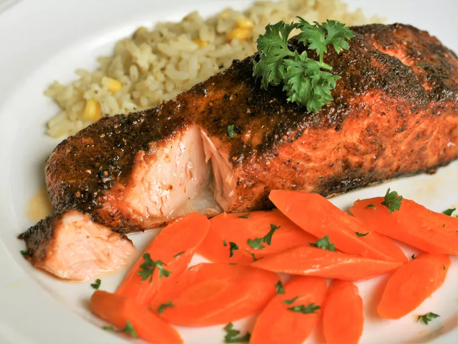

Cajun salmon

Description
Cajun salmon is a dish that typically features a salmon fillet that has been
seasoned with a Cajun spice blend, which typically includes ingredients such
as paprika, cayenne pepper, garlic powder, and onion powder. The salmon is then
cooked, either by grilling, baking, or pan-searing, and is often served with a
Cajun-style sauce or topping. Some variations may also include additional
ingredients such as peppers, onions, rice, carrots and tomatoes.
Overall, Cajun salmon is known for its bold and spicy flavors, and is a popular
dish in Cajun and Creole cuisine.
Ingredients
- Olive oil or butter for cooking
- Lemon or lime juice for added flavor
- Vegetables such as bell peppers, onions and carrots
- Fresh herbs such as parsley or cilantro
Some Cajun salmon recipes may also include additional seasonings and spices,
such as thyme, oregano, and bay leaves to enhance the flavor. Some may also
include a sauce or topping that is added after the salmon is cooked, such as
a butter or cream-based sauce with Cajun spices.
Steps
- Prepare the Cajun spice blend by mixing together paprika, cayenne pepper,
garlic powder, onion powder, salt, and black pepper in a small bowl.
- Rinse the salmon fillet and pat it dry with paper towels.
- Rub the Cajun spice blend over the entire surface of the salmon fillet,
making sure to cover it evenly.
- Preheat a skillet or grill pan over medium-high heat. If you are using a
skillet, add some oil or butter to the pan to prevent sticking.
- Place the salmon fillet in the skillet or on the grill pan and cook for
about 3-4 minutes per side for a 1/2-inch thickness, or until the fish is
cooked through and the internal temperature reaches 145°F.
- If desired, you can add some vegetables such as bell peppers, onions, and
tomatoes to the skillet or grill pan to cook alongside the salmon.
- Once the salmon is cooked through, remove it from the heat and serve it
immediately. You can garnish with fresh herbs like parsley or cilantro or
squeeze some lemon or lime juice for added flavor.
Grilling and baking methods will also work. Cooking time may vary depending
on the thickness of the salmon, the cooking method used, and the desired
level of doneness.
Return to Main Menu